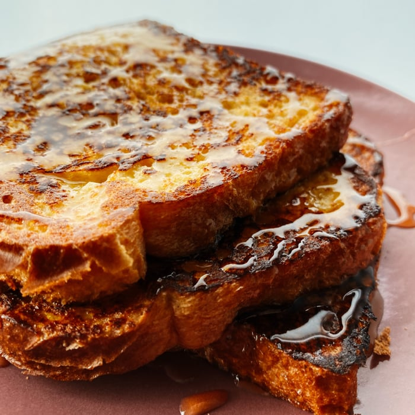

Torrada Francesa

A torrada francesa é a favorito da manhã de domingo.
Esta receita tenra, fofa e indulgente é feita de forma rápida e fácil.
Ingredientes
- Pão francês: 6 fatias grossas de pão
- Ovos: 2 ovos grandes
- Leite: 3/4 xícara de leite
- Baunilha e canela: 1 colher de chá de extrato de baunilha; 1/4 colher de chá de canela em pó
- Sal: a gosto
- Manteiga: 1 colher de sopa de manteiga sem sal
Passos
- Bata o leite, os ovos, a baunilha, a canela e o sal em uma tigela rasa.
- Unte levemente com manteiga uma frigideira e aqueça em fogo médio-alto.
- Mergulhe o pão na mistura de ovos, deixando ambos os lados de molho.
- Transfira para a frigideira quente e cozinhe até dourar, 3 a 4 minutos de cada lado.
- Servir quente.